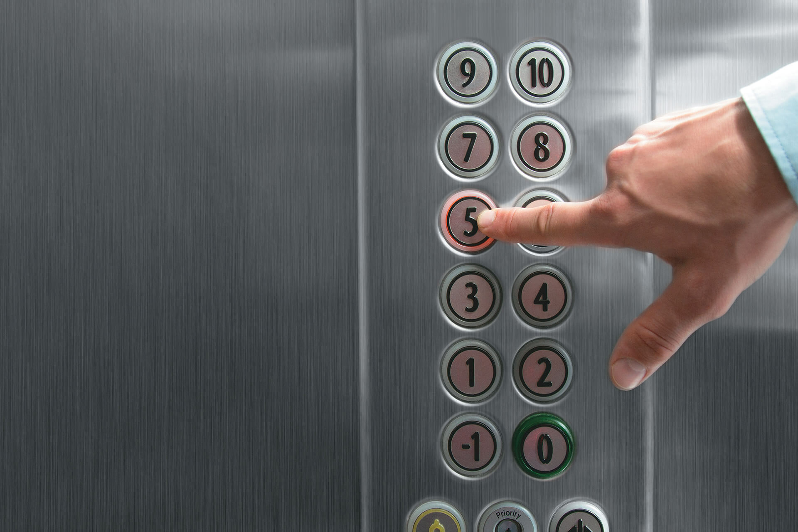

Em todo o mundo, algumas cidades se destacam pelas estruturas e tecnologias utilizadas em sua construção. As imagens a seguir mostram uma dessas grandes metrópolis, a qual está localizada no Brasil.
Introdução
Qual é a cidade brasileira mostrada nessa composição de fotos?
Este mosaico, que está nas calçadas dessa cidade, foi criado pela desenhista Mirthes Bernardes. Você sabe no que ela se inspirou para criar o polígono branco ou preto? Pesquise para responder à questão.
Ao final do estudo deste capítulo, você deverá reconhecer as simetrias de translação, de rotação e de reflexão, bem como compreender suas propriedades e construir figuras obtidas por essas transformações geométricas.
Translação
Antes de estudarmos as simetrias, vamos relembrar que o plano cartesiano é um plano que contém um sistema de eixos perpendiculares entre si no ponto de origem, sendo um eixo horizontal, denominado eixo
das abscissas ou eixo x, e um
eixo vertical, denominado eixo das ordenadas ou eixo y. Esse plano possibilita determinar a localização de um ponto por meio de um par ordenado (abscissa,
ordenada), formado
pelas coordenadas do ponto. Observe os pontos P e M.
As coordenadas do ponto P são
abscissa: 3
ordenada: 2
Indicamos P (3, 2).
As coordenadas do ponto M são
abscissa: 2
ordenada: 3
Indicamos M (2, 3).
Os eixos x e y dividem o plano cartesiano em 4 partes chamadas de quadrantes numerados no sentido anti-horário. Neste capítulo, restringiremos as representações apenas ao 1.º
quadrante.
Escreva as coordenadas dos pontos indicados no plano cartesiano a seguir.
A (___,___)
B (___,___)
C (___,___)
D (___,___)
E (___,___)
F (___,___)
G (___,___)
H (___,___)
I (___,___)
J (___,___)
Escreva as coordenadas dos vértices do quadrilátero apresentado.
Como se denomina esse quadrilátero?
Na construção do mosaico que representa as calçadas de São Paulo, podemos utilizar módulos. Os módulos e a forma de dispô-los definem o padrão do mosaico. Observe o módulo destacado.
Considerando o octógono ABCDEFGH como o módulo desse mosaico, complete as lacunas com as coordenadas dos vértices desse polígono.
A (___,___)
B (___,___)
C (___,___)
D (___,___)
E (___,___)
F (___,___)
G (___,___)
H (___,___)
O segundo módulo já foi posicionado. Complete as lacunas com as coordenadas dos vértices desse polígono. Depois, compare as coordenadas dos pontos do octógono 1 com as do octógono 2.
I (___,___)
J (___,___)
G (___,___)
K (___,___)
L (___,___)
M (___,___)
N (___,___)
O (___,___)
Note que foram adicionadas 4 unidades à abscissa de cada vértice. Isso significa que o octógono 2 é uma translação do octógono 1, 4 unidades à direita.
Complete as lacunas com as coordenadas dos vértices do terceiro módulo.
V (___,___)
P (___,___)
Q (___,___)
R (___,___)
S (___,___)
T (___,___)
U (___,___)
K (___,___)
Perceba que o vértice A tem coordenadas (2, 0) e o ponto correspondente do terceiro módulo, o vértice V, tem coordenadas (4, 2), ou seja, foram adicionadas 2 unidades à primeira e à segunda coordenadas. Isso significa que o
octógono 3 é uma translação do octógono 1, 2 unidades à direita e 2 unidades para cima.
A repetição de um módulo, por meio do deslocamento paralelo em linha reta, representa a simetria de translação.
Ao repetir algumas vezes o procedimento de posicionar um módulo e fazer as translações indicadas, é possível notar que vão se formando octógonos brancos, os quais são iguais aos verdes em tamanho e forma.
Agora, vamos praticar! Em uma folha de papel quadriculado, use sua criatividade. Crie um módulo e repita-o de modo que forme um padrão, produzindo uma composição.
A translação é um movimento ou uma transformação geométrica que faz uso do deslocamento de um objeto ou de uma figura em determinado sentido e direção, sem sobreposição e sem que a forma e o tamanho sejam alterados.
Observe a translação na faixa decorativa e no papel de parede a seguir.
Neste plano cartesiano, foi desenhado um polígono.
a) Quais as coordenadas dos vértices desse polígono?
b) Esse polígono é convexo? Justifique sua resposta.
c) Que tipo de polígono é esse?
d) Esse polígono é regular?
Indique as coordenadas dos vértices do quadrilátero ABCD representado no plano cartesiano.
a) Que tipo de quadrilátero foi representado?
b) Se o ponto D tivesse como coordenadas (5, 1), quais deveriam ser as coordenadas do ponto C para que o quadrilátero desenhado permanecesse com o mesmo formato?
Analise cada figura e assinale aquela que apresenta simetria de translação.
A árvore desenhada junto ao eixo vertical (y) foi transladada. Observe.

a) Complete a tabela com as coordenadas dos pontos no plano cartesiano.
Primeira árvore
Árvore transladada
A(___,___)
M(___,___)
T(___,___)
U(___,___)
G(___,___)
N(___,___)
b) Qual é a relação que se pode observar entre as abscissas dos pontos da primeira árvore e os correspondentes na segunda? E entre as ordenadas?
c) Seguindo o padrão que você descreveu no item b, desenhe as próximas duas árvores.
No plano cartesiano ao lado, foi desenhado um triângulo ABC. Com base nele, determine os triângulos:
a) DEF, transladado 4 unidades à direita.
b) GHI, transladado 3 unidades acima.
c) JKL, transladado 8 unidades à direita.
Complete o mosaico usando a simetria de translação.
Esta é a obra Ar e água I, de Maurits Cornelis Escher, de 1938. Esse ilustrador holandês se inspirava na natureza e nos conceitos matemáticos para criar gravuras surreais, desafiando a lógica de perspectiva e simetria de
quem as visualiza.
National Gallery of Canada
ESCHER, M.C. Ar e água I. 1938. Xilogravura, 43,8 × 43,8 cm. Galeria Nacional do Canadá.
Observe-a atentamente da esquerda para a direita e de cima para baixo. Explique como o artista utilizou a translação entre os peixes e entre os pássaros representados.
Rotação
Matemática em detalhes
Juliana comprou ladrilhos hidráulicos, todos iguais a este, para compor um mosaico.
Veja como ela fez, considerando o 1º. ladrilho como um módulo.
Note que o giro do 2.º ladrilho foi de 90° em relação à posição 1.
Para colocar o 3º. ladrilho, o módulo sofreu um giro de 180° desde a posição inicial. Isso significa que, tomando como referência a posição 2, o giro foi, novamente, de 90°. Observe:
Dizemos que essa composição apresenta simetria de rotação, uma vez que foi necessário fazer um giro de 90° em torno de um ponto central, com base na posição anterior, ao colocar cada ladrilho.
A rotação é uma transformação geométrica que faz uso de giros, segundo um ângulo, de um objeto em torno de um ponto fixo (centro de rotação), sem sobreposição e sem que a forma e o tamanho sejam alterados. O giro
pode ser feito em sentido horário ou anti-horário.
O funcionamento de uma roda-gigante nos dá a ideia de rotação.
Complete esta faixa, fazendo rotações de 90° do pentágono, no sentido anti-horário, a partir da posição anterior.
O nado sincronizado é uma modalidade olímpica disputada somente por mulheres. Duetos ou equipes realizam apresentações nas quais as atletas são livres para criar os movimentos de uma coreografia. Observe a foto de uma formação.
Para que uma nadadora assuma exatamente a posição da outra em um giro nessa formação, ele deverá ser de
Esta é a foto de um aerogerador, um equipamento que utiliza a energia cinética do vento para convertê-la em energia elétrica. Esse sistema utiliza energia limpa e sustentável, uma vez que o vento é fonte renovável e inesgotável. O
princípio utilizado em sua construção é o mesmo dos cata-ventos feitos de papel, pois a energia vem do movimento rotacional de suas pás.
Para observar esse movimento, vamos construir um cata-vento. Você vai precisar de um quadrado de papel de 16 cm de largura, um palito de churrasco, cola branca ou cola quente, tesoura, régua, um pedaço de canudo e um pedaço de
arame ou uma tachinha.
1º. No quadrado de papel, trace as duas diagonais, dividindo o quadrado em 4 triângulos. Pinte cada triângulo de uma cor, nos dois lados do papel, utilizando as cores vermelha, verde, amarela e azul.
2º. De cada um dos 4 vértices para o centro, recorte 9 cm sobre a diagonal.
3º. Cole, alternadamente, uma ponta sim e uma não no ponto central do quadrado. Esse será o ponto de giro.
4º. Faça um furo no ponto central com a tesoura ou com a tachinha.
5º. Passe o pedaço de canudo com o arame dentro e prenda no palito de churrasco. Caso opte pela tachinha, fixe diretamente no palito de churrasco e, para não espetar o dedo, cole um pedaço de EVA na ponta.
No cata-vento, temos um exemplo concreto de simetria de rotação, pois a posição de cada uma das hélices representa uma rotação das demais. Nele, as hélices giram em torno de um ponto fixo central.
a) O módulo rotacionou quantos graus de 1 para 2? E em qual sentido: horário ou anti-horário?
b) E de 1 para 3?
Construa uma faixa decorativa que apresente simetria de rotação. Para isso, pinte os quadrados (módulos), que vão compor um padrão. Você deverá ilustrar o módulo e replicá-lo de modo que forme um padrão que apresente simetria de
rotação.
Esta é a High Roller, uma das maiores rodas-gigantes do mundo. Ela fica em Las Vegas, tem 28 cabines e leva 30 minutos para dar um giro completo.
Considerando o movimento realizado, responda às questões propostas.
a) Em quanto tempo a High Roller executa um giro de 60°?
b) Quanto tempo, aproximadamente, uma cabine leva para ocupar o lugar de outra?
30
28
c) Uma cabine gira, aproximadamente, quantos graus para ocupar o lugar da seguinte?
360
28
d) Considerando a cabine que está no ponto mais próximo do solo, quantos graus a roda-gigante deverá girar para que essa cabine atinja o ponto mais alto?
Reflexão
Esta imagem foi apresentada no início do capítulo. É da ponte estaiada Octávio Frias de Oliveira, na cidade de São Paulo.
O que se pode perceber na imagem que aparece nas águas do Rio Pinheiros?
Vamos estudar uma propriedade que algumas figuras geométricas apresentam.
Observe outra foto dessa ponte. Ela é a única do mundo com duas pistas em curva independentes, as quais estão conectadas por cabos de aço (chamados de estais, por isso a denominação estaiada) a um mastro de 138 metros de altura – o que
equivale a um prédio de 46 andares.
Podemos imaginar uma linha vertical passando bem no meio da estrutura, como no desenho.
Essa linha divide a estrutura em duas partes iguais, em posições opostas, que, se pudessem ser sobrepostas, coincidiriam. Dizemos, então, que a estrutura é simétrica em relação a essa linha, a qual é denominada eixo de
simetria.
A simetria obtida em relação a um eixo é chamada de simetria axial.
a) Algumas das figuras abaixo nos dão a ideia de simetria. Assinale as que parecem simétricas e trace seus eixos de simetria.
Para quem olha a imagem refletida pelo espelho, a mão usada para escovar os dentes parece ser a direita ou a esquerda?
Note que Diana e sua imagem refletida são simétricas e que o espelho é o plano que faz essa simetria, denominada de reflexão.
d) Siga as instruções abaixo e responda às questões.
Marque o ponto A’ simétrico de A.
Represente o segmento A’B’ simétrico ao $\ov AB$.
O que é possível concluir em relação às medidas dos segmentos AB, BC e CA e de seus simétricos A’B’, B’C’ e C’A’?
Os ângulos internos do triângulo original são congruentes aos do triângulo refletido?
Observe os vértices do triângulo original em ordem alfabética. Eles estão em sentido horário ou anti-horário?
E os vértices do triângulo refletido em ordem alfabética estão em sentido horário ou anti-horário?
Represente o triângulo A’B’C’ simétrico ao triângulo ABC.
A reflexão é uma transformação geométrica que conserva a forma e o tamanho das figuras. A posição da figura transformada é oposta à da figura original.
Atividades
Você vai precisar de uma folha de papel quadrada, com lados entre 15 e 20 cm, para construir um Abre e fecha.
b) O quadrado é uma figura simétrica. Quantos eixos de simetria ele tem?
II. Desloque cada vértice do quadrado para o centro. Vire o papel com as dobras para baixo.
III. Dobre cada vértice desse novo quadrado até o centro.
IV. Dobre ao meio, formando um retângulo e, novamente, ao meio, formando um quadrado. Desdobre voltando à situação final do passo III.
V. Pinte cada um dos 8 triângulos de uma cor, recorte-os como mostra a figura e escreva uma palavra que represente uma mensagem positiva na parte interna dos triângulos. Serão 8 palavras ao todo.
Quais tipos de triângulos foram formados?
Esses triângulos apresentam eixo de simetria? Quantos?
VI. Volte o papel à posição do passo III. Em seguida, dobre o quadrado ao meio, de baixo para cima, formando um retângulo. Posicione os polegares e indicadores nas aberturas sinalizadas.
VII. Segure o Abre e fecha e mantenha a dobradura fechada. Peça ao colega que escolha um número de 1 a 10. Movimente a dobradura o número de vezes que ele pedir. Depois, peça ele que escolha uma cor. Em seguida, abra o triângulo
correspondente a essa cor e leia a palavra.
Jack Art. 2017. Digital.
A simetria está presente na arquitetura das cidades. Em cada imagem, trace, se possível, o eixo de simetria.
Complete os desenhos em relação ao eixo de simetria indicado.
a)
b)
c)
d)
Observe os polígonos e o círculo e investigue a existência ou não de eixos de simetria, escrevendo, a seguir, a quantidade deles em cada figura. Depois, trace os eixos de simetria que existirem.
Triângulo escaleno:
Triângulo isósceles:
Triângulo equilátero:
Quadrado:
Retângulo:
Paralelogramo:
Pentágono regular:
Hexágono regular:
Círculo:
Que relação existe entre o número de lados e o número de eixos de simetria de um polígono regular?
b) Quais tipos de simetrias são possíveis observar nessa figura?
Organize as ideias
A seção Organize as ideias foi pensada para ajudá-lo em seus estudos, pois a utilização de mapas conceituais, quadros esquemáticos ou resumos são muito eficientes para melhorar a compreensão dos conceitos.
Neste capítulo, estudamos as simetrias, também conhecidas como transformações geométricas. Complete o quadro associando a imagem ao tipo de simetria que elas lembram e descreva suas principais características.